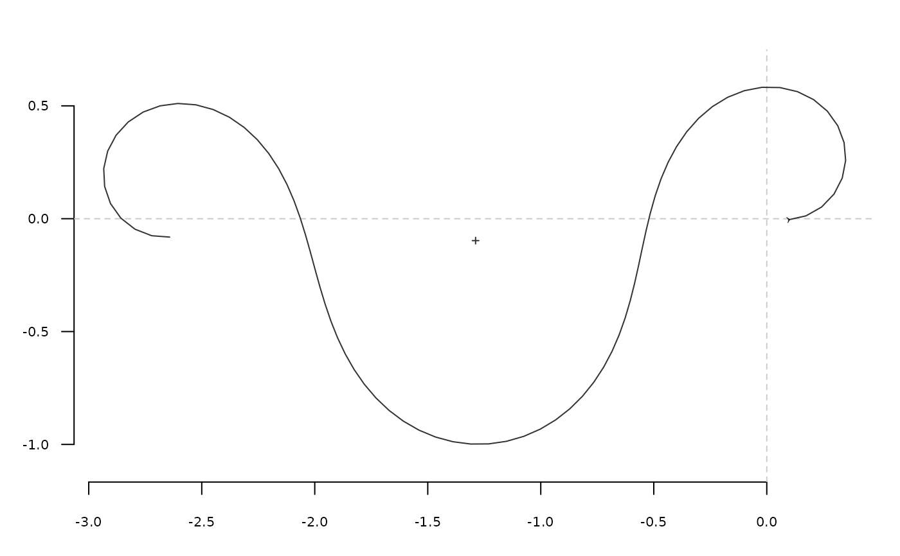

tfourier_i uses the inverse tangent angle Fourier transformation to
calculate a shape, when given a list with Fourier coefficients, typically
obtained computed with tfourier.
Usage
tfourier_i(
tf,
nb.h,
nb.pts = 120,
force2close = FALSE,
rescale = TRUE,
perim = 2 * pi,
thetao = 0
)Arguments
- tf
a list with ao, an and bn components, typically as returned by tfourier
- nb.h
integer. The number of harmonics to calculate/use- nb.pts
integer. The number of points to calculate- force2close
logical. Whether to force the outlines calculated to close (see coo_force2close).- rescale
logical. Whether to rescale the points calculated so that their perimeter equalsperim.- perim
The perimeter length to rescale shapes.
- thetao
numeric. Radius angle to the reference (in radians)
Value
A list with components:
- x
vectorofx-coordinates.- y
vectorofy-coordinates.- phi
vectorof interpolated changes on the tangent angle.- angle
vectorof position on the perimeter (in radians).
Details
See tfourier for the mathematical background.
References
Zahn CT, Roskies RZ. 1972. Fourier Descriptors for Plane Closed Curves. IEEE Transactions on Computers C-21: 269-281.
Claude, J. (2008) Morphometrics with R, Use R! series, Springer 316 pp.
See also
Other tfourier:
tfourier(),
tfourier_shape()
Examples
tfourier(bot[1], 24)
#> $ao
#> [1] 7.733739
#>
#> $an
#> [1] 0.0452247795 -0.3755623338 0.0276855331 0.9411732992 -0.3990148731
#> [6] -0.7763824605 -0.5768666699 0.0440901651 -0.7604537570 -0.4636638848
#> [11] -0.6086940781 -0.1408419257 -0.2906453466 0.1360186290 -0.2905320818
#> [16] -0.0013913889 0.0999975983 0.2531539067 -0.2409440735 -0.0107735036
#> [21] -0.0386305555 -0.0238992918 -0.1631252535 -0.0004085881
#>
#> $bn
#> [1] 0.008457058 2.526564125 -0.554083930 0.313312077 -0.288987146
#> [6] 0.032821965 -0.226300468 0.409651090 -0.021830547 0.015586993
#> [11] 0.414880500 0.677636372 0.197011887 0.180444429 0.433515510
#> [16] 0.237573437 0.107717915 0.027571558 0.054653201 -0.170505441
#> [21] 0.130595490 -0.014178384 -0.048221455 -0.127039009
#>
#> $phi
#> [1] 0.00000000 0.03394792 6.12970584 6.22607257 6.18054224 6.19051042
#> [7] 6.13580603 5.99700591 5.99842093 5.99084704 5.86041492 5.81488459
#> [13] 5.76506244 5.62887223 5.58334190 5.53781157 5.39732954 5.35179921
#> [19] 5.22136709 5.16746875 5.12193843 5.06723404 5.07720222 5.03804123
#> [25] 5.03308691 5.08250829 5.03697796 5.17966914 5.21216935 5.41953309
#> [31] 5.77457625 5.99961627 6.05629266 6.19411028 6.06367816 6.15041823
#> [37] 6.20005411 6.10694068 6.10899345 6.11083173 6.24864935 6.21627616
#> [43] 0.15041122 0.41687566 0.72706839 0.84208756 0.93719564 0.93924841
#> [49] 0.94130119 0.84818776 0.80265743 0.85207881 0.75917987 0.75672633
#> [55] 0.62053611 0.71690284 0.62442716 0.58361378 0.52907469 0.53478153
#> [61] 0.44702280 0.39677552 0.39819054 0.39061666 0.21281593 0.16728561
#> [67] 0.07417217 6.26424405 6.21871372 6.07886944 5.99538267 5.94148434
#> [73] 5.89595401 5.85879168 5.85121780 5.90000142 6.00172285 5.85652387
#> [79] 5.95289060 6.03171526 6.08391184 6.21482206 6.12821895 6.02776111
#> [85] 5.90179053 5.77058090 5.73820771 5.54311764 5.45064197 5.40081982
#> [91] 5.40652666 5.31405098 5.27323760 5.21869850 5.17746000 5.13664661
#> [97] 5.13334469 5.04086901 4.99104686 4.62111347 5.01682255 4.60719411
#> [103] 5.30626827 6.00978848 6.15257805 6.15247100 6.15452378 6.10899345
#> [109] 6.19573352 0.50480943 1.60303743 0.87544326 1.21632143 1.02825629
#> [115] 1.03030907 0.88982703 0.79735136 0.79876638 0.84818776 0.70770572
#> [121] 0.61523005 0.51420121 0.66606644 0.52558441 0.48434590 0.34125395
#> [127] 0.16219458 0.14695801 6.24944229 6.18612024 6.12136151 6.11662487
#> [133] 6.17219791 6.26019663 0.02904262 0.07417217 0.07622495 0.08278017
#>
#> $t
#> [1] 0.00000000 0.04553033 0.09106066 0.13659098 0.18212131 0.22765164
#> [7] 0.27318197 0.31871230 0.36424263 0.40977295 0.45530328 0.50083361
#> [13] 0.54636394 0.59189427 0.63742460 0.68295492 0.72848525 0.77401558
#> [19] 0.81954591 0.86507624 0.91060657 0.95613689 1.00166722 1.04719755
#> [25] 1.09272788 1.13825821 1.18378854 1.22931886 1.27484919 1.32037952
#> [31] 1.36590985 1.41144018 1.45697051 1.50250083 1.54803116 1.59356149
#> [37] 1.63909182 1.68462215 1.73015248 1.77568280 1.82121313 1.86674346
#> [43] 1.91227379 1.95780412 2.00333445 2.04886477 2.09439510 2.13992543
#> [49] 2.18545576 2.23098609 2.27651642 2.32204674 2.36757707 2.41310740
#> [55] 2.45863773 2.50416806 2.54969839 2.59522871 2.64075904 2.68628937
#> [61] 2.73181970 2.77735003 2.82288036 2.86841068 2.91394101 2.95947134
#> [67] 3.00500167 3.05053200 3.09606233 3.14159265 3.18712298 3.23265331
#> [73] 3.27818364 3.32371397 3.36924430 3.41477462 3.46030495 3.50583528
#> [79] 3.55136561 3.59689594 3.64242627 3.68795659 3.73348692 3.77901725
#> [85] 3.82454758 3.87007791 3.91560823 3.96113856 4.00666889 4.05219922
#> [91] 4.09772955 4.14325988 4.18879020 4.23432053 4.27985086 4.32538119
#> [97] 4.37091152 4.41644185 4.46197217 4.50750250 4.55303283 4.59856316
#> [103] 4.64409349 4.68962382 4.73515414 4.78068447 4.82621480 4.87174513
#> [109] 4.91727546 4.96280579 5.00833611 5.05386644 5.09939677 5.14492710
#> [115] 5.19045743 5.23598776 5.28151808 5.32704841 5.37257874 5.41810907
#> [121] 5.46363940 5.50916973 5.55470005 5.60023038 5.64576071 5.69129104
#> [127] 5.73682137 5.78235170 5.82788202 5.87341235 5.91894268 5.96447301
#> [133] 6.01000334 6.05553367 6.10106399 6.14659432 6.19212465 6.23765498
#>
#> $perimeter
#> [1] 2513.886
#>
#> $thetao
#> [1] -1.508378
#>
#> $x1
#> [1] 37
#>
#> $y1
#> [1] 561
#>
tfourier_shape()

#> x y
#> [1,] -0.01789443 0.061365507
#> [2,] -0.07070493 0.120835725
#> [3,] -0.13512573 0.167479231
#> [4,] -0.20762961 0.200172391
#> [5,] -0.28495482 0.218786045
#> [6,] -0.36431987 0.223967314
#> [7,] -0.44353973 0.216905578
#> [8,] -0.52105841 0.199114813
#> [9,] -0.59591885 0.172252763
#> [10,] -0.66769262 0.137986433
#> [11,] -0.73638844 0.097904756
#> [12,] -0.80235445 0.053473449
#> [13,] -0.86618385 0.006023863
#> [14,] -0.92862879 -0.043233477
#> [15,] -0.99052401 -0.093179817
#> [16,] -1.05271942 -0.142751860
#> [17,] -1.11601949 -0.190905324
#> [18,] -1.18112771 -0.236584376
#> [19,] -1.24859457 -0.278701817
#> [20,] -1.31876939 -0.316133766
#> [21,] -1.39175741 -0.347731291
#> [22,] -1.46738534 -0.372349830
#> [23,] -1.54517932 -0.388895310
#> [24,] -1.62435999 -0.396383713
#> [25,] -1.70385851 -0.394008589
#> [26,] -1.78235584 -0.381209155
#> [27,] -1.85834536 -0.357730458
#> [28,] -1.93021564 -0.323667024
#> [29,] -1.99634731 -0.279482652
#> [30,] -2.05521519 -0.226001555
#> [31,] -2.10548593 -0.164369510
#> [32,] -2.14610079 -0.095987578
#> [33,] -2.17633557 -0.022424586
#> [34,] -2.19583197 0.054682784
#> [35,] -2.20459886 0.133732118
#> [36,] -2.20298569 0.213249748
#> [37,] -2.19163338 0.291969383
#> [38,] -2.17141064 0.368889447
#> [39,] -2.14334431 0.443306763
#> [40,] -2.10855225 0.514827171
#> [41,] -2.06818574 0.583356001
#> [42,] -2.02338637 0.649072606
#> [43,] -1.97526039 0.712393582
#> [44,] -1.92487103 0.773928679
#> [45,] -1.87324765 0.834432248
#> [46,] -1.82140901 0.894751494
#> [47,] -1.77039682 0.955771267
#> [48,] -1.72131446 1.018353832
#> [49,] -1.67536484 1.083271378
#> [50,] -1.63388017 1.151129156
#> [51,] -1.59833525 1.222278398
#> [52,] -1.57033492 1.296720570
#> [53,] -1.55156628 1.374008306
#> [54,] -1.54370760 1.453153090
#> [55,] -1.54828887 1.532555027
#> [56,] -1.56650564 1.609974696
#> [57,] -1.59899608 1.682569647
#> [58,] -1.64560306 1.747016876
#> [59,] -1.70515444 1.799735835
#> [60,] -1.77530492 1.837213380
#> [61,] -1.85248672 1.856413019
#> [62,] -1.93201188 1.855228279
#> [63,] -2.00835279 1.832918614
#> [64,] -2.07560030 1.790451822
#> [65,] -2.12806420 1.730675612
#> [66,] -2.16094487 1.658256575
#> [67,] -2.17097747 1.579357888
#> [68,] -2.15693900 1.501072657
#> [69,] -2.11992071 1.430678755
#> [70,] -2.06330249 1.374821496
#> [71,] -1.99241797 1.338751564
#> [72,] -1.91395544 1.325740520
#> [73,] -1.83518925 1.336765174
#> [74,] -1.76316506 1.370501984
#> [75,] -1.70396549 1.423615698
#> [76,] -1.66215961 1.491276058
#> [77,] -1.64049848 1.567803510
#> [78,] -1.63986982 1.647335017
#> [79,] -1.65948055 1.724413387
#> [80,] -1.69720395 1.794431962